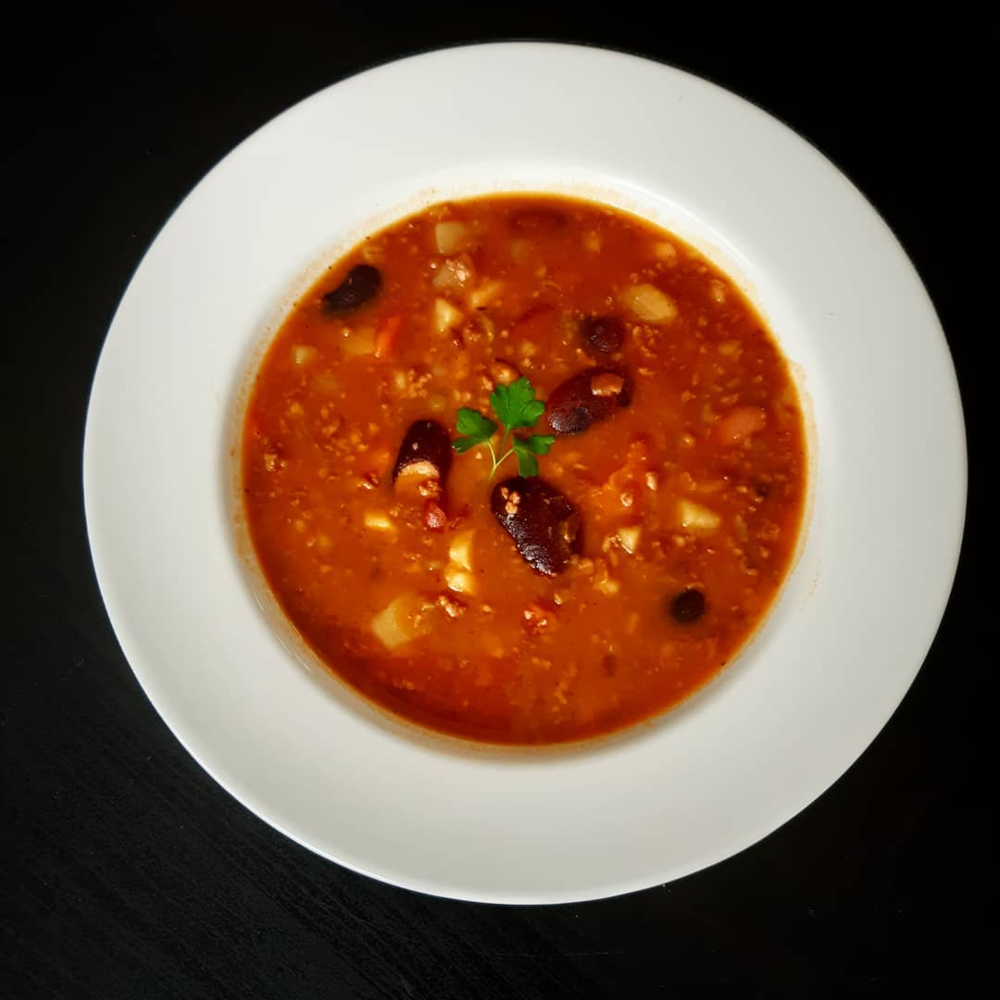

Mleté mäso podľa @jajfil — Normy Jedál
Pikantná stukovinova polievka s mletým mäsom
---------------------------------------------------------------------------------
Ingrediencie
1 ks cibuľa
30 g bravčová masť
250 g mleté mäso
500 ml paradajková šťava
1 l voda
100 g fazuľa
50 g hŕstka
50 g šošovica
3 ks zemiak
3 ks mrkva
3 ks petržlen
5 ks nové korenie celé
⅓ čl mletá sladká červená paprika
mleté čierne korenie
soľ
Chili
Postup
Fazuľu, hŕstku aj šošovicu si spolu namočíme cez noc.
Cibuľu očistíme, nakrájame na drobno a opražíme na masti do zlatista. Pridáme mleté mäso a opražíme 3 min.. Potom pridáme mletú papriku, nové i čierne korenie, chilli podľa chuti, radšej menej a potom pridáme, zalejeme paradajkovo šťavou, vodu, premiešame, nasypeme premyté strukoviny a dáme variť do polomäkka. Alebo tlakovom hrnci 30 min. od dosiahnutia tlaku.
Zeleninu očistíme a nakrájame na malé kocky. Pridáme do polievky. Osolíme az teraz a dáme dovariť. V tlakovom hrnci na 15 min. od dosiahnutia tlaku.
Keď je všetko uvarené dosolíme, pridáme chilli a podávame. Môžeme zajedať pečivom.
#soup#beans#legumes#groundmeat#meal#lunch#Bonappetite#lentils#recipe#homecooking#cooking#tasty#food#polievka#fazula#strukoviny#mletemaso#jedlo#obed#dobruchut#sosovica#recept#jedlo#varimdoma